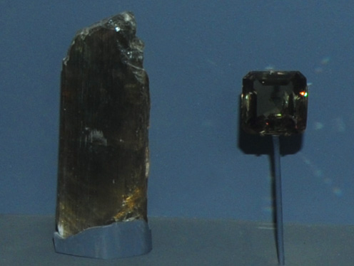

|

| AlO(OH)
This sample of diaspore is displayed in the Smithsonian Museum of Natural History. Diaspore is an oxide mineral of aluminum with the composition AlO(OH). The sample at left is about 3 cm across and is from Mugla, Menderes Mountains, Anatolia, Turkey. The diaspore gem is 27.8 carats.
|